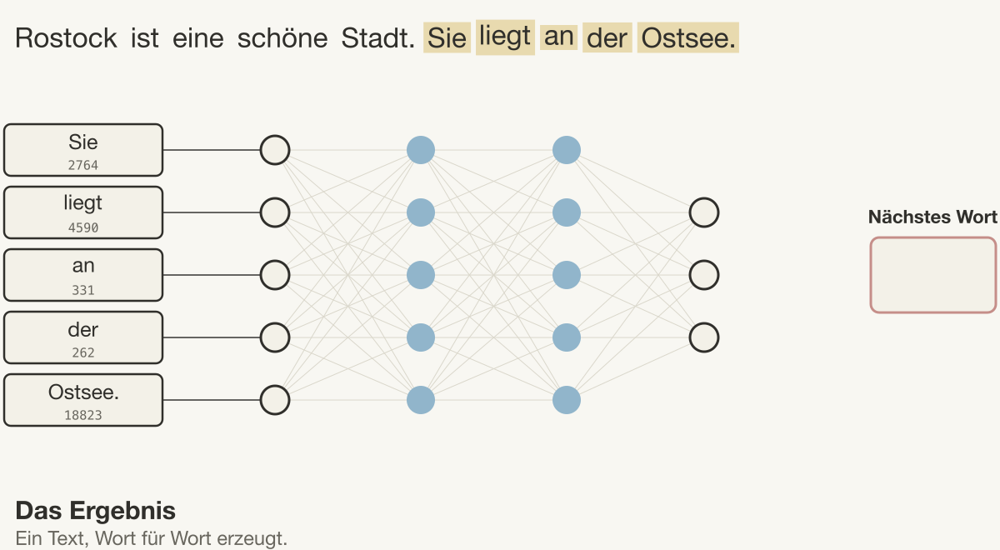
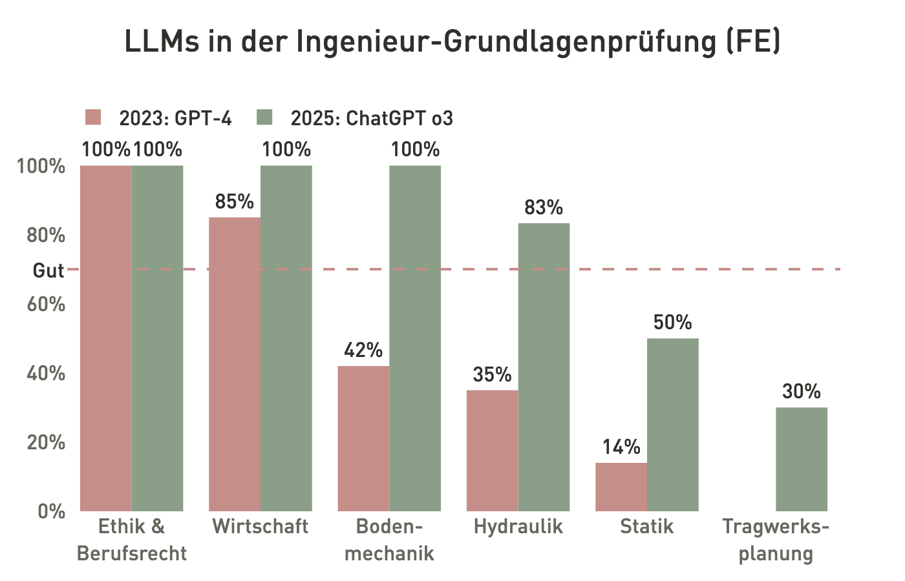
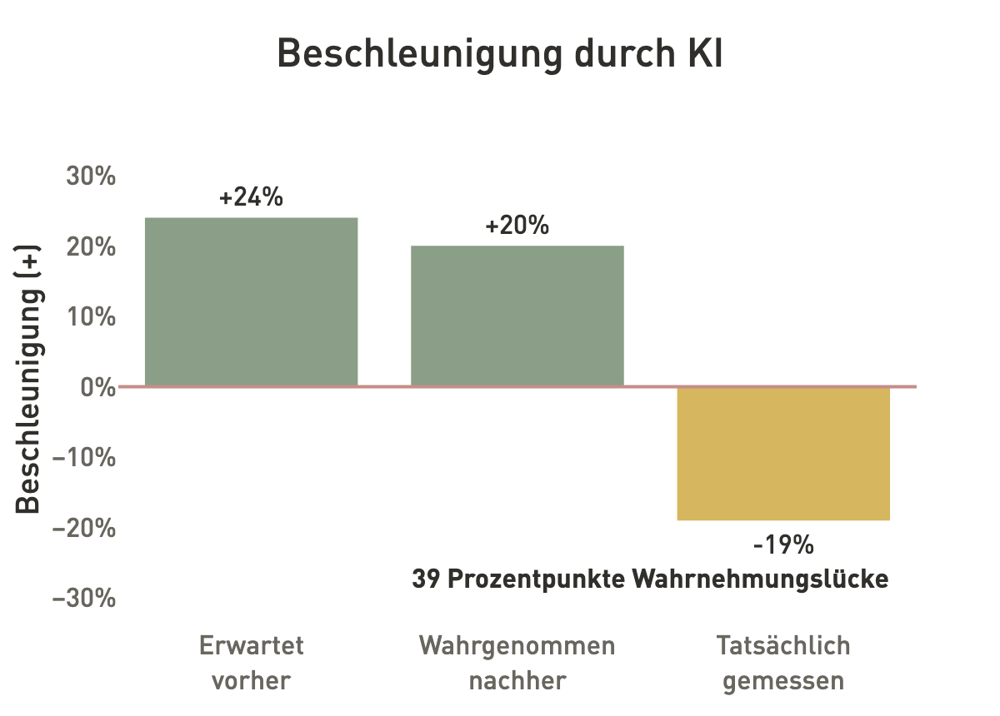
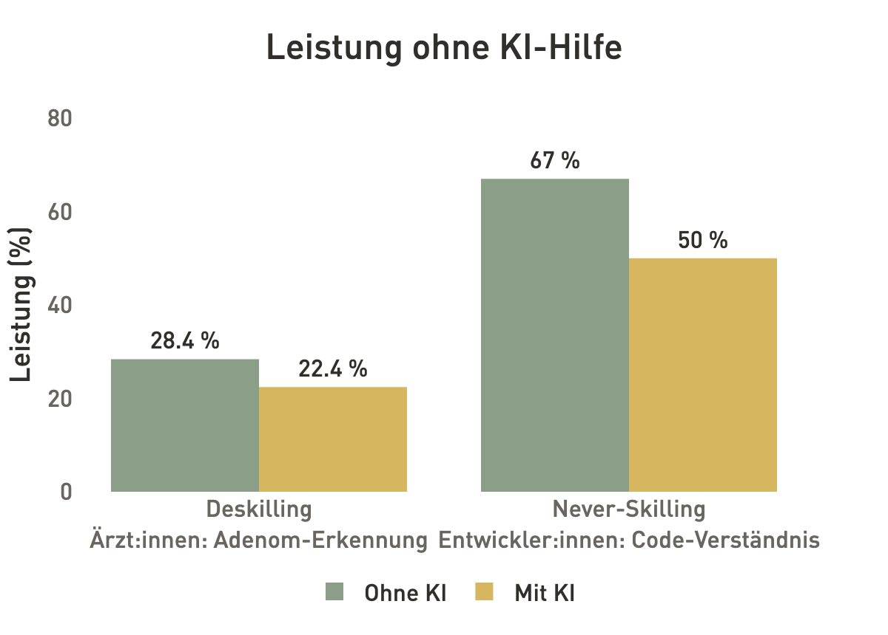

b, h = 200, 400 # Breite, Höhe in mm
M = 150 # Moment in kNm
W = b * h**2 / 6 # Widerstandsmoment in mm³
sigma = M / W # Spannung in N/mm²
print(f"Ergebnis: {sigma:.1e}")Ergebnis: 2.8e-05
There’s a new kind of coding I call ‘vibe coding’, where you fully give in to the vibes, embrace exponentials, and forget that the code even exists.
— Andrej Karpathy, Beitrag auf X, 2025 (Karpathy 2025)
Karpathy beschreibt mit vibe coding eine Arbeitsweise, bei der wir das Programmieren vollständig einer KI überlassen und den entstandenen Code gar nicht mehr ansehen. Für Ingenieurinnen und Ingenieure ist das keine Option, denn sie verantworten die Ergebnisse ihrer Berechnungen unabhängig davon, wer den Code geschrieben hat. In diesem Kapitel klären wir deshalb, was ein KI-Assistent beim Programmieren tatsächlich tut und wo seine Grenzen liegen.
Zunächst betrachten wir, wie ein großes Sprachmodell Text und Code erzeugt und warum es dabei plausible, aber nicht zwingend korrekte Ergebnisse liefert. Darauf aufbauend lernen wir Agenten und den agentischen Zyklus kennen, der die Arbeitsmethode dieses Kurses bildet, und üben zwei seiner Schritte: einen Prompt als Anforderung zu formulieren und generierten Code gezielt zu lesen. Abschließend fragen wir, wie gut Menschen KI-Ergebnisse überhaupt prüfen können. Als roter Faden dient uns ein einfaches Beispiel aus der Tragwerksplanung, die Biegespannung eines Rechteckträgers.
Wir beginnen mit einem Prompt, wie ihn viele von uns in einen Chat-Assistenten tippen würden: „Berechne die Biegespannung eines Rechteckträgers.“ Der Assistent liefert daraufhin den folgenden Code, der ohne jede Fehlermeldung durchläuft:
b, h = 200, 400 # Breite, Höhe in mm
M = 150 # Moment in kNm
W = b * h**2 / 6 # Widerstandsmoment in mm³
sigma = M / W # Spannung in N/mm²
print(f"Ergebnis: {sigma:.1e}")Ergebnis: 2.8e-05Das Ergebnis von 2,8·10⁻⁵ N/mm² sieht zunächst wie eine gewöhnliche Zahl aus. Lesen wir den Code jedoch Zeile für Zeile, fällt auf, dass das Moment in kNm angegeben ist, das Widerstandsmoment hingegen in mm³. Für eine Spannung in N/mm² müsste das Moment zuerst in Nmm umgerechnet, also mit 10⁶ multipliziert werden. Mit \(W = b h^2 / 6 = 5\,333\,333\ \text{mm}^3\) und \(M = 150 \cdot 10^6\ \text{Nmm}\) ergibt sich richtig \(\sigma = M / W\) = 28,125 N/mm². Das Programm liegt also um den Faktor 10⁶ daneben, ohne dass Python etwas meldet, denn der Interpreter kennt keine Einheiten und hält jede Zahl für gültig.
Wer die Grundlagen der Statik beherrscht, erkennt den Fehler beim Lesen sofort, beim bloßen Ausführen dagegen nicht. Damit stellt sich die Frage, die uns durch dieses Kapitel begleitet: Warum macht ein so leistungsfähiges System einen so einfachen Fehler, und wie können wir ihn systematisch vermeiden? Um sie zu beantworten, müssen wir zunächst verstehen, wie ein Sprachmodell zu seiner Antwort kommt.

Sprachmodelle sind ein Teilgebiet der Künstlichen Intelligenz (KI), deren Schwerpunkte sich in den letzten Jahren stark verschoben haben. Die Abbildung zeigt drei Phasen dieser Entwicklung. Im Semantic and Machine Learning Age um 2012 standen logikbasiertes Schließen (Semantic Reasoning), Machine Learning, Optimierung und Robotik als weitgehend eigenständige Gebiete nebeneinander. Im Neural Network Age um 2018 wurde Machine Learning zum dominierenden Gebiet, und künstliche neuronale Netzwerke (KNN) durchdrangen die Sprachverarbeitung (Natural Language Processing, NLP), die Bildverarbeitung (Computer Vision, CV) und die Robotik.
Seit etwa 2022, im Large Foundation Model Age, bestimmen große generative Modelle das Feld: Large Language Models (LLM) für Sprache und Large Vision Models (LVM) für Bilder. Alle KI-Werkzeuge, mit denen wir in diesem Kurs programmieren, gehören zu dieser letzten Phase. Ihre gemeinsame Grundlage sind neuronale Netzwerke, die wir uns deshalb als Erstes ansehen.
Ein künstliches neuronales Netzwerk (KNN) ist ursprünglich ein mathematisches Modell der Nervenzellen im menschlichen Gehirn, das bereits 1943 formuliert wurde. Sein Grundbaustein, das künstliche Neuron, ist bemerkenswert einfach aufgebaut. Es multipliziert jeden Eingang \(x_i\) mit einem Gewicht \(w_i\), addiert die Produkte sowie einen Bias \(b\) und gibt die Summe an eine Aktivierungsfunktion \(f(\cdot)\) weiter, die entscheidet, wie stark das Neuron aktiviert wird:

\[ y = f\left(b + \sum_{i=1}^{n} w_i x_i\right) \]
Die Gewichte drücken aus, wie wichtig ein Eingang für das Ergebnis ist. Beim Training werden Gewichte und Bias so lange angepasst, bis das Netzwerk für bekannte Beispiele die gewünschten Ausgänge liefert; das Netzwerk lernt also, welche Eingänge zählen. Die Stärke des Ansatzes liegt nicht im einzelnen Neuron, sondern darin, dass sehr viele dieser gleichartigen Bausteine schnell und hochparallel berechnet werden können. Für unsere Ausgangsfrage ist schon hier eine Eigenschaft wichtig: Ein Neuron gewichtet und addiert nur Zahlen, eine Vorstellung von Einheiten, Kräften oder Momenten enthält es nicht.
Ein einzelnes Neuron kann nur einfache Zusammenhänge abbilden. Tiefe neuronale Netzwerke (Deep Neural Networks, DNN) schalten deshalb viele Schichten von Neuronen hintereinander, je nach Architektur zwischen 3 und 150. Da jedes Neuron einer Schicht mit den Neuronen der nächsten Schicht verbunden ist, wächst die Zahl der Parameter mit jeder Schicht multiplikativ. Praktisch trainieren ließen sich solche Netze erst ab etwa 2011, als zwei Entwicklungen zusammenkamen: Grafikkarten mit tausenden Recheneinheiten, die die vielen gleichartigen Rechnungen parallel ausführen, und bessere Algorithmen, die eine sehr große Zahl von Parametern zuverlässig bestimmen.

Der Gewinn der Tiefe liegt darin, dass jede Schicht die Ausgaben der vorherigen zusammenführt. Dadurch kann das Netzwerk Wissen abstrahieren, weil die Eingänge Schicht für Schicht zu allgemeineren Merkmalen verdichtet werden. Zugleich kann es Wissen verknüpfen, weil jede weitere Schicht die abstrahierten Merkmale kombiniert und das für die Aufgabe Wichtige stärker gewichtet. Bei einem Foto einer Betonoberfläche können frühe Schichten beispielsweise Kanten erkennen und spätere daraus den Verlauf eines Risses.
Große Sprachmodelle (Large Language Models, LLM) übertragen dieses Prinzip auf Text und vergrößern die Netzwerke auf mehrere Milliarden Parameter. Sie zerlegen Texte in Wörter oder Wortteile und lernen aus sehr großen Textsammlungen, mit welcher Wahrscheinlichkeit welches Wort auf welche vorangehenden Wörter folgt. Möglich wurde das 2017 durch die Transformer-Architektur (Vaswani u. a. 2017), deren Attention-Mechanismus für jedes Wort gewichtet, welche anderen Wörter im Text für dieses Wort relevant sind, auch über Satzgrenzen hinweg.

Auch hier lernt das Netzwerk zu abstrahieren und zu verknüpfen: Es erkennt, welche Wörter in einem Text wichtig sind, und welche anderen Wörter über Sätze hinweg mit ihnen zusammenhängen. Stellen wir eine Anfrage an einen Chat-Assistenten wie ChatGPT, wird dieses gelernte Wissen umgekehrt genutzt, indem das Modell die Wortfolge erzeugt, die als Fortsetzung unserer Anfrage am wahrscheinlichsten ist. Quellcode ist für das Modell ebenfalls nur Text, und auf genau diese Weise ist auch der Code aus unserem Einstiegsbeispiel entstanden.
Wie entsteht aus diesen Wahrscheinlichkeiten ein ganzer Text? Ein LLM verarbeitet intern keine Buchstaben, sondern Zahlen. Jedes Wort oder Wortteil, ein sogenanntes Token, steht in einem festen Vokabular und hat dort eine Nummer. Die Nummern des bisherigen Textes laufen durch das neuronale Netzwerk, das am Ende für jedes Token des Vokabulars eine Wahrscheinlichkeit ausgibt. Das Modell wählt daraus das nächste Token, hängt es an den Text an und beginnt mit dem verlängerten Text von vorn. Dieses Vorgehen heißt autoregressive Generierung.

Die Abbildung zeigt den Ablauf an einem Beispiel, wobei die Nummern illustrativ gewählt sind: Aus „Rostock ist eine schöne Stadt.“ entsteht Wort für Wort die Fortsetzung „Sie liegt an der Ostsee.“ Entscheidend ist, dass das Modell in jedem Schritt nur das nächste Token vorhersagt. Es plant keine Rechnung und prüft am Ende kein Ergebnis. Ob eine Zeile wie sigma = M / W mit passenden Einheiten arbeitet, spielt für die Vorhersage daher keine Rolle, solange der Code wie typischer Code aussieht.
Damit wird deutlich, warum das Vorgehen eines Sprachmodells für Ingenieuraufgaben problematisch ist. Eine Ingenieurin, die die Biegespannung berechnet, übersetzt die Aufgabe in ein mentales Modell: Sie stellt sich den Träger, die Belastung und die Spannungsverteilung im Querschnitt vor. In diesem Modell versteht sie, warum und wann sich der Balken biegt, kann daraus kausale Schlüsse ziehen und das Ergebnis auf physikalische Plausibilität prüfen. Eine Randspannung von 0,000028 N/mm² unter einem Moment von 150 kNm würde ihr deshalb sofort als unrealistisch auffallen.
Ein LLM übersetzt dieselbe Aufgabe dagegen in ein sprachliches Muster. Es weiß, dass Wörter wie „Balken“, „biegen“ und „Widerstandsmoment“ häufig gemeinsam vorkommen und welche Codezeilen typischerweise darauf folgen, besitzt aber kein Modell der dahinterliegenden Mechanik. Es sagt nur statistisch wahrscheinliche Wörter voraus und kann nicht prüfen, ob seine Ausgabe sinnvoll ist; im wörtlichen Sinn rechnet es also nicht (Ploennigs u. a. 2025).
Woher kommt dieses Verhalten? Ein Sprachmodell durchläuft drei Trainingsphasen. Beim Pre-Training lernt es an sehr großen Sammlungen aus Text und Code, die jeweils nächste Fortsetzung vorherzusagen, wobei die Verlustfunktion allein misst, wie gut die tatsächliche Fortsetzung getroffen wurde. Beim Instruction-Tuning ahmt es Paare aus Aufgaben und Musterantworten nach und lernt so, Anweisungen zu befolgen. In der Feedback-Phase bewerten Menschen alternative Antworten, und das Modell wird auf die bevorzugten Antworten ausgerichtet (Ouyang u. a. 2022).
In keiner dieser Phasen kommen eine Einheitenprüfung, das Ergebnis einer Programmausführung oder die konkrete Anforderung der späteren Nutzenden vor. Belohnt wird, was plausibel und hilfreich klingt, nicht was nachweislich korrekt ist. Dabei ist das Modell kein Nachschlagewerk, das gespeicherten Code wiedergibt, denn es setzt aus gelernten Mustern auch Code zusammen, der so nie in den Trainingsdaten stand. Darin liegt seine Stärke, weil es für fast jede Aufgabe einen Lösungsvorschlag liefern kann. Darin liegt aber auch die Ursache unseres Einheitenfehlers: sigma = M / W ist ein häufiges und plausibles Muster, und nichts im Training hat das Modell gezwungen, die Einheit von M zu hinterfragen.
Der Unterschied wird deutlicher, wenn wir ein Sprachmodell mit einem gewöhnlichen Programm vergleichen. Ein Programm erhält Daten als Eingabe und verhält sich deterministisch: Dieselbe Eingabe liefert immer dieselbe Ausgabe, und ein Syntax- oder Typfehler führt zu einer Fehlermeldung mit Zeilenangabe. Ob die Formel im Programm fachlich stimmt, garantiert das zwar nicht, wie unser Einstiegsbeispiel zeigt. Das Verhalten ist aber reproduzierbar und lässt sich deshalb systematisch testen. Ähnlich verlässlich arbeiten eine Datenbankabfrage, die genau die gespeicherten Datensätze zurückgibt, oder ein Compiler, der Quellcode nach festen Regeln übersetzt.
Ein Sprachmodell erhält dagegen einen Prompt und gibt keine formale Garantie für seine Ausgabe. Es antwortet immer, auch wenn der Prompt unklar ist oder die richtige Antwort nie gelernt wurde, und dieselbe Eingabe kann bei erneuter Anfrage eine andere Ausgabe liefern. Statt einer Fehlermeldung erhalten wir im Fehlerfall eine plausibel klingende, aber falsche Antwort. Die Verantwortung für die Korrektheit liegt damit vollständig bei den Menschen, die das Modell nutzen, und Verifikation wird vom optionalen Zusatzschritt zur Pflicht.
Wie gut lösen Sprachmodelle Ingenieuraufgaben, wenn wir sie allein arbeiten lassen? Die Antwort hängt davon ab, welche Fähigkeit gefragt ist. Beim Verstehen sind sie stark im Zusammenfassen und im Allgemeinwissen zu Bauen und Architektur; ihnen fehlen jedoch numerisches und räumliches Verständnis sowie Detailwissen zur Baudomäne und zum konkreten Projekt. Beim Generieren übersetzen sie zuverlässig und erzeugen Bilder, halluzinieren aber bei Unwissenheit und liefern keine wiederholbar zusammenhängenden Ergebnisse. Ihr Wissen lässt sich durch Retrieval-Augmented Generation (RAG) erweitern oder durch Nachtraining auf Spezialwissen abstimmen, an komplexe Ingenieurprobleme lassen sie sich damit aber dennoch nicht anpassen.

Das Diagramm zeigt diese Grenzen anhand der US-amerikanischen Ingenieur-Grundlagenprüfung (Fundamentals of Engineering, FE). Auf der x-Achse stehen die Fachgebiete, auf der y-Achse der Anteil richtig gelöster Aufgaben, und die gestrichelte Linie bei 70 Prozent markiert ein gutes Ergebnis. GPT-4 erreichte 2023 in Ethik und Berufsrecht 100 Prozent und in Wirtschaft 85 Prozent, in Bodenmechanik, Hydraulik und Statik dagegen nur 42, 35 und 14 Prozent (Pursnani u. a. 2023). Das neuere Modell ChatGPT o3 verbesserte sich 2025 deutlich, blieb aber in der Statik bei 50 und in der Tragwerksplanung bei 30 Prozent (Oblitas, Adeeb, und Cruz-Noguez 2025). Gerade die Gebiete, die unser Beispiel betrifft, bleiben also die schwächsten. Wir sprechen von einer Kompetenzfalle, weil die sprachliche Gewandtheit des Modells eine fachliche Kompetenz nahelegt, die es in diesen Gebieten nicht besitzt.
Nachdem wir verstanden haben, wie ein Sprachmodell Code erzeugt, wenden wir uns den Werkzeugen zu, mit denen wir in diesem Kurs arbeiten. Die Technik hinter ihnen ist erstaunlich jung, wie die folgende Übersicht zeigt.
| Jahr | Meilenstein | Bedeutung |
|---|---|---|
| 2017 | Transformer (Vaswani u. a. 2017) | Attention ersetzt rekurrente Netze |
| 2020 | GPT-3 (Brown u. a. 2020) | 175 Mrd. Parameter, lernt Aufgaben aus wenigen Beispielen im Prompt |
| 2021 | Codex und GitHub Copilot (Chen u. a. 2021) | Sprachmodell auf Quellcode feinjustiert |
| 2022 | ChatGPT (Ouyang u. a. 2022) | Instruction-Tuning und Feedback von Menschen |
| 2025 | Coding-Agenten | Sprachmodell mit Zugriff auf Dateien und Terminal |
Die ersten Code-Werkzeuge vervollständigten einzelne Zeilen im Editor. Chat-Assistenten konnten ab 2022 ganze Funktionen auf Anfrage schreiben, die wir anschließend selbst in unser Projekt kopierten. Seit 2025 verbreiten sich Coding-Agenten, die Dateien selbst lesen und ändern, Code ausführen und Tests starten. Mit jeder dieser Stufen übernimmt die KI mehr Arbeit, und umso größer wird die Versuchung, ihre Ergebnisse ungeprüft zu übernehmen, also genau das vibe coding, das Karpathy beschreibt (Karpathy 2025).
Ein Chat-Assistent beantwortet eine Anfrage und wartet dann auf die nächste. Ein Agent erweitert das Sprachmodell dagegen um eine Schleife mit Werkzeugen. Das Modell plant einen Schritt, ruft ein Werkzeug auf, etwa zum Lesen oder Schreiben einer Datei, zum Ausführen von Code oder zum Starten von Tests, und erhält dessen Ergebnis zurück in sein Kontextfenster. Auf dieser Grundlage plant es den nächsten Schritt. So arbeitet ein Agent mehrere Schritte selbstständig ab und kann beispielsweise eine Fehlermeldung lesen und den Code daraufhin korrigieren.

Die gängigen Werkzeuge unterscheiden sich vor allem im Grad dieser Autonomie, und damit ändert sich, was wir prüfen müssen. GitHub Copilot ergänzt Zeilen während des Tippens; geprüft wird jeder einzelne Vorschlag, bevor wir ihn mit der Tabulatortaste übernehmen, was bequem ist, aber dazu verleitet, Code ungelesen zu akzeptieren. Cursor kombiniert Editor und Chat und schlägt Änderungen vor, die wir als Diff vor der Übernahme durchsehen. Claude Code, das Werkzeug dieses Kurses, arbeitet im Terminal oder als VS-Code-Erweiterung mit Sicht auf das ganze Projekt; es plant, liest, führt aus und testet selbst, sodass wir am Ende das Ergebnis gegen die Anforderung prüfen. Je höher die Autonomie, desto wichtiger wird diese Prüfung, denn der Agent kennt unsere Anforderung nur aus dem Prompt. Selbst wenn er Tests ausführt, kann er nicht wissen, ob diese Tests die richtige Anforderung abbilden.

Der Agent arbeitet seine innere Schleife selbstständig ab, doch die Anforderung kennt nur der Mensch. Deshalb legen wir um diese innere Schleife eine äußere, den agentischen Zyklus, der die Arbeitsmethode des ganzen Kurses bildet. Er besteht aus fünf Schritten: Prompt, Generieren, Verstehen, Verifizieren und Iterieren. Nur das Generieren übernimmt die KI, die übrigen vier Schritte liegen bei uns.
Am Leitbeispiel lässt sich jeder Schritt konkret benennen. Im Prompt legen wir Einheiten und Ausgabegröße fest. Die KI generiert daraufhin eine Funktion biegespannung(…) und durchläuft dabei gegebenenfalls selbst die innere Agentenschleife. Beim Verstehen lesen wir den Code und verfolgen die Einheiten im Datenfluss. Beim Verifizieren vergleichen wir das Ergebnis mit einer unabhängigen Handrechnung, die 28,125 N/mm² ergibt. Weicht es ab, ergänzen wir beim Iterieren den fehlenden Constraint und prompten neu, bis die Anforderung nachweislich erfüllt ist. Jeder dieser Schritte verlangt eine eigene Kompetenz, nämlich Anforderungen zu formulieren, Code zu lesen und in Tests zu denken; genau diese Fähigkeiten baut der Kurs auf.
| Block | Thema | Trainierter Schritt |
|---|---|---|
| 1 | Computational Foundations | Verstehen |
| 2 | Computational Engineering | Prompt |
| 3 | Programming Foundations | Verstehen, Iterieren |
| 4 | Verification & Quality | Verifizieren |
| 5 | Problem Classes | Prompt, Verifizieren |
| 6 | Data Management | ganzer Zyklus |
Die Tabelle zeigt, wie sich der agentische Zyklus über die sechs Blöcke des Kurses (S01 bis S13) verteilt. Im ersten Block steht das Verstehen im Vordergrund, denn wir lernen, Code zu lesen und Datentypen zu erkennen. Der zweite Block, zu dem dieses Kapitel gehört, trainiert die Formulierung von Anforderungen als Prompt. Im dritten Block lesen und überarbeiten wir Kontrollstrukturen und Funktionen, während der vierte Block die Verifikation durch Unit Tests und Code Review formalisiert. Im fünften Block wenden wir Prompt und Verifikation auf typische Problemklassen an, und der sechste Block verbindet alle Schritte in datenbankgestützten Projekten. Die Zuordnung ist als Orientierung gedacht, denn jede Sitzung kann auch weitere Schritte berühren.
Der erste Schritt des Zyklus entscheidet maßgeblich darüber, wie viele Iterationen folgen. Ein Prompt ist im Kern eine Anforderungsspezifikation, wie wir sie aus der Softwareentwicklung kennen, und sollte fünf Elemente enthalten. Die Rolle legt fest, aus welcher fachlichen Perspektive die KI antworten soll, hier als Python-Entwickler für Tragwerksplanung. Der Kontext beschreibt die Ausgangslage, insbesondere die Eingabegrößen und ihre Einheiten. Die Aufgabe benennt präzise, was entstehen soll, möglichst mit Funktionsname und Signatur. Ein Constraint schränkt die Lösung ein, etwa auf eine interne Rechnung in N und mm oder auf den Verzicht auf externe Bibliotheken. Das Ausgabeformat bestimmt schließlich die Form des Ergebnisses, zum Beispiel einen Docstring mit Einheiten und Typ-Hints.
Für unser Beispiel ergibt sich daraus der folgende Prompt:
„Du bist Python-Entwickler für Tragwerksplanung.
Eingaben: b und h in mm, M in kNm.
Schreibebiegespannung(b_mm, h_mm, M_knm) -> float.
Rechne intern in N und mm, Ergebnis in N/mm².
Keine externen Bibliotheken.
Mit Docstring, der die Einheiten nennt, und Typ-Hints.“
Der vage Prompt „Berechne die Biegespannung eines Rechteckträgers“ ließ dagegen alle diese Punkte offen. Die KI musste Einheiten, Funktionsnamen, Rückgabewert und erlaubte Hilfsmittel erraten, und sie riet plausibel, aber nicht passend. Je präziser der Prompt, desto weniger Iterationen sind nötig; wie wir Anforderungen systematisch erheben, vertiefen wir in 04a_Anforderungen.
Wie stark der Prompt das Ergebnis bestimmt, zeigt der direkte Vergleich zweier Varianten. Der vage Prompt „Schreibe eine Python-Funktion für die Biegespannung eines Rechteckquerschnitts.“ nennt keine Einheiten und führt zu einer Funktion wie dieser:
def biegespannung_v1(b, h, M):
W = b * h**2 / 6
return M / W
print(f"{biegespannung_v1(200, 400, 150):.1e}")2.8e-05Die Funktion läuft und gibt einen Wert aus, der um den Faktor 10⁶ zu klein ist, weil sie das Moment in kNm unmittelbar durch das Widerstandsmoment in mm³ teilt. Legt der Prompt dagegen Signatur, Eingabeeinheiten und Ergebniseinheit fest („Schreibe biegespannung(b_mm, h_mm, M_knm). b und h in mm, M in kNm. Rechne intern in N und mm, Ergebnis in N/mm².“), entsteht eine Funktion, deren Parameternamen die Einheiten bereits tragen:
def biegespannung(b_mm, h_mm, M_knm):
"""Biegespannung in N/mm²; M in kNm."""
W_mm3 = b_mm * h_mm**2 / 6
return M_knm * 1e6 / W_mm3
print(f"{biegespannung(200, 400, 150):.3f}")28.125Hier steht die Umrechnung M_knm * 1e6 explizit im Code, und der Docstring nennt die Einheit des Ergebnisses, sodass die Funktion die erwarteten 28,125 N/mm² liefert. Beide Funktionen sind syntaktisch einwandfrei und laufen ohne Fehlermeldung; der Unterschied liegt allein in der Spezifikation. Der Einheitenfehler ist daher weniger ein Versagen des Modells als die Folge eines unvollständigen Prompts, und für die vollständige Spezifikation sind wir als Ingenieurinnen und Ingenieure verantwortlich.
Auch ein guter Prompt garantiert keinen korrekten Code, daher folgt auf das Generieren das Verstehen. Dabei hilft eine feste Lesereihenfolge, die von außen nach innen vorgeht: zuerst die Signatur mit Parametern und Rückgabetyp, dann der Docstring, danach vorhandene Tests und erst zuletzt die Implementierung. Signatur und Docstring beschreiben, was eine Funktion verspricht, während die Implementierung beschreibt, wie sie es umsetzt. Stimmt bereits das Versprechen nicht, ist die Umsetzung zweitrangig.
Für unser Beispiel lassen sich daraus drei Prüffragen ableiten. Die erste lautet, ob die Parameternamen die Einheiten tragen, die zweite, ob der Docstring die Einheit des Ergebnisses nennt. Bei biegespannung_v1(b, h, M) scheitert schon die erste Frage, denn die Namen sagen nichts über Einheiten aus, und ein Docstring fehlt ganz. Bei biegespannung(b_mm, h_mm, M_knm) stehen die Einheiten in den Namen, und der Docstring nennt N/mm² als Ergebnis. Die dritte Frage übernimmt die Rolle eines Tests, indem sie das Versprechen an einem Wert prüft, den wir unabhängig von der KI kennen: Mit b = 200 mm, h = 400 mm und M = 150 kNm muss die Funktion 28,125 N/mm² liefern. Erst wenn alle drei Fragen mit Ja beantwortet sind, lohnt sich der genaue Blick in die Implementierung; liefert die Funktion etwas anderes, ergänzen wir den Prompt um den fehlenden Constraint. Wie sich solche Prüfwerte als automatische Unit Tests formulieren lassen, behandeln wir in 08a_UnitTest.
Aus dem Zyklus ergibt sich ein neues Rollenverständnis. Die KI übernimmt die Rolle einer Junior-Entwicklerin, die schnell Code liefert, und wir übernehmen die Rolle der Senior-Entwicklerin oder des Senior-Entwicklers, die diesen Code abnehmen. Eine gute Senior-Entwicklerin liest den Code gründlich, stellt Fragen, fordert Änderungen und gibt erst dann ihre Freigabe.
Konkret umfasst diese Abnahme drei Rollen. Als Auftraggeber formulieren wir die Anforderung so präzise, dass die KI passenden Code erzeugen kann; im Beispiel fehlten genau hier die Einheiten. Als Leser verstehen wir den generierten Code mit seinen Annahmen und Grenzen, im Beispiel also die Division von kNm durch mm³ im Datenfluss. Als Verifizierer prüfen wir, ob das Ergebnis die Anforderung erfüllt, im Beispiel durch die Handrechnung mit 28,125 N/mm². Die Verantwortung für den Code bleibt damit beim Menschen, denn KI-generierter Code entbindet nicht von der Haftung für das Ergebnis.
Wenn die KI nicht allein arbeiten kann, liegt es nahe, die Prüfung einfach dem Menschen zu überlassen. Doch auch das stößt an Grenzen, weshalb wir hier von einer Kapazitätsfalle sprechen. Das Prüfen von KI-Output ist ermüdend, was unter dem Begriff AI Fatigue diskutiert wird, und es ist alles andere als trivial. In der Softwareentwicklung wächst die Menge an KI-generiertem Code schneller als die Kapazität für Reviews; auf GitHub hat sich die Zahl der Pull Requests vervierfacht (CodeRabbit 2026).

Hinzu kommt, dass wir den eigenen Nutzen von KI schlecht einschätzen. Die METR-Studie ließ 16 erfahrene Open-Source-Entwicklerinnen und -Entwickler an 246 echten Issues arbeiten, wobei für jedes Issue zufällig festgelegt wurde, ob KI-Werkzeuge erlaubt waren (METR 2025). Das Diagramm zeigt die drei zentralen Kennwerte der Studie. Vorab erwarteten die Teilnehmenden eine Beschleunigung um 24 Prozent, und auch nach der Arbeit schätzten sie die erlebte Beschleunigung noch auf 20 Prozent. Gemessen wurde jedoch eine Verlangsamung um 19 Prozent, sodass zwischen gefühlter und gemessener Produktivität 39 Prozentpunkte liegen. Wer sich auf das eigene Gefühl verlässt, prüft also womöglich weniger gründlich, als die Situation erfordert.
Die dritte Falle betrifft die Zukunft, denn selbst wenn wir heute gründlich prüfen, müssen wir diese Fähigkeit auch morgen noch besitzen. Nutzende überschätzen ihre Fähigkeit, KI-Output zu beurteilen (Fernandes, Kosch, und Woźniak 2026). Zugleich führt häufige KI-Nutzung zu Cognitive Offloading, also zum Auslagern von Denkarbeit an das Werkzeug, und geht mit sinkendem kritischem Denken einher (Gerlich 2025).

Das Diagramm zeigt zwei Folgen davon, jeweils gemessen an der Leistung ohne KI-Hilfe. Beim Deskilling verlieren Erfahrene Fähigkeiten, die sie bereits beherrschten: In einer Studie zur Koloskopie sank die Adenom-Erkennungsrate von Ärztinnen und Ärzten bei Untersuchungen ohne KI von 28,4 auf 22,4 Prozent, nachdem sie zuvor mit KI-Unterstützung gearbeitet hatten (Budzyń u. a. 2025). Beim Never-Skilling erwerben Einsteigerinnen und Einsteiger die Grundlagen gar nicht erst (Ke u. a. 2026). Im Bereich Programmierung erreichten Entwicklerinnen und Entwickler, die sich mit KI-Hilfe in neue Inhalte eingearbeitet hatten, im anschließenden Test zum Code-Verständnis 50 statt 67 Prozent (Shen und Tamkin 2026).
Zusammen ergibt sich ein Teufelskreis: Mehr KI-Assistenz führt zu Cognitive Offloading, dieses zu Deskilling und schließlich zu Never-Skilling. Für Studierende im ersten Semester ist das die eigentliche Begründung für den Aufbau dieses Kurses, denn wer KI-generierten Code prüfen will, muss zuerst selbst lernen, Code zu verstehen.
Warum ist all das für Ingenieurinnen und Ingenieure wichtig? Eine Antwort gibt die Wissenstreppe nach North (North 2011), die die Stufen von verfügbaren Daten bis zu besseren Ergebnissen ordnet. Aus Zeichen werden durch Syntax Daten, aus Daten durch Semantik Information und aus Information durch Vernetzung mit Kontext, Erfahrung und Erwartung Wissen. Diese unteren Stufen bilden explizites, theoretisches Wissen. Erst mit Anwendungsbezug wird aus Wissen Können, mit Motivation Handeln, durch richtiges Handeln Kompetenz und durch Einzigartigkeit schließlich Wettbewerbsfähigkeit; diese oberen Stufen bilden implizites, operatives Wissen.

ChatGPT und vergleichbare Modelle decken die Stufen von den Zeichen bis zum Wissen ab. Agenten wie Claude Code übernehmen zusätzlich das Handeln, denn sie führen Code aus, ändern Dateien und starten Tests. Ob eine Handlung richtig ist, beurteilen sie jedoch nicht verlässlich, und genau an dieser Stelle beginnt die Kompetenz. Für unser Beispiel heißt das: Den Code für die Biegespannung schreibt die KI in Sekunden, aber zu erkennen, dass 2,8·10⁻⁵ N/mm² nicht stimmen kann, und die Anforderung so zu formulieren, dass 28,125 N/mm² herauskommt, bleibt unsere Aufgabe. Diese Kompetenz ist zugleich unser entscheidender Vorteil gegenüber dem Werkzeug.
Die wichtigsten Punkte dieses Kapitels lassen sich so zusammenfassen. Sprachmodelle erzeugen plausiblen, aber nicht garantiert korrekten Code, weil ihr Training Wortwahrscheinlichkeiten belohnt und keine Rechnung prüft. Ein gut strukturierter Prompt mit Rolle, Kontext, Aufgabe, Constraint und Ausgabeformat ist eine Anforderungsspezifikation. Im agentischen Zyklus übernimmt die KI das Generieren, während wir als Auftraggeber, Leser und Verifizierer für Anforderung und Ergebnis verantwortlich bleiben.